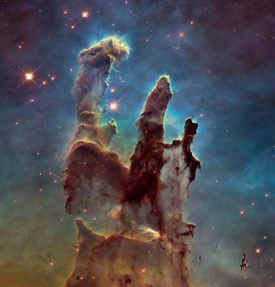

Sistema Solar
O Sistema Solar é formado pelo Sol e oito planetas que orbitam ao seu redor, além de luas, asteroides, cometas e outros corpos celestes. Cada planeta apresenta características únicas, como atmosferas, temperaturas e tamanhos diferentes. As missões espaciais da NASA ajudam os cientistas a compreender melhor a origem, a evolução e o funcionamento do nosso sistema planetário, permitindo novas descobertas sobre o universo.
Galáxias
As galáxias são enormes conjuntos de estrelas, planetas, gases, poeira e matéria escura unidos pela gravidade. A Via Láctea, onde está localizado o Sistema Solar, possui centenas de bilhões de estrelas. Graças ao Telescópio Espacial James Webb e ao Hubble, a NASA consegue observar galáxias muito distantes, revelando informações sobre como o universo surgiu e evoluiu ao longo de bilhões de anos.


Nebulosas
Nebulosas são gigantescas nuvens de gás e poeira espalhadas pelo espaço. Muitas delas são consideradas verdadeiros berçários estelares, pois é em seu interior que novas estrelas começam a se formar. Além de sua importância para a astronomia, as nebulosas chamam a atenção por suas cores vibrantes e formas impressionantes registradas pelos telescópios da NASA.